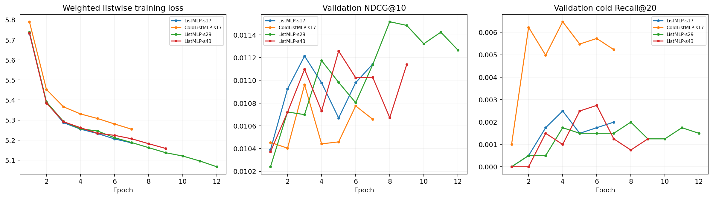

状态：completed · 协议：2624e6561e71af4b
R05 使用新的留出用户；训练只使用 R03 训练期内的时间滚动样本。标题与类别仍采用静态快照可用假设。
TF-IDF / SVD 仅拟合 2017 年以前训练商品；滚动窗口的协同与热门统计仅使用各窗口开始前的交互。
学习方法与 RRF 基线共享最多 400 个合法候选，输出 Top200。候选未命中的训练目标不会被插入池中；所有评价正反馈保留在分母。
普通训练与冷样本加权的损失权重不同，两条训练损失曲线的绝对值不宜直接比较。
每个模型按整体验证 NDCG 选最佳轮次；最终策略另按预登记的整体质量下限与冷商品 Recall 选择。神经模型三种子研究设置不等于默认策略。
无可表示历史时保持原融合；不使用测试标签参与特征构造。未观测候选作为对比负例，不代表明确负反馈。
验证集最终选择：ColdListMLP-s17。三种子训练的神经设置：ListMLP。
在同一候选池和同一测试用户上，验证选中方法的 NDCG@10=0.009119，相对 RRF 的观测差值为 +39.5%；冷目标 Top20 命中从 6 增至 26 / 7088。
最终选中的 ColdListMLP-s17 只有一个种子，不能套用另一训练设置的三种子标准差。现有结果还不能证明该方法的跨种子稳定收益或统计显著性。
